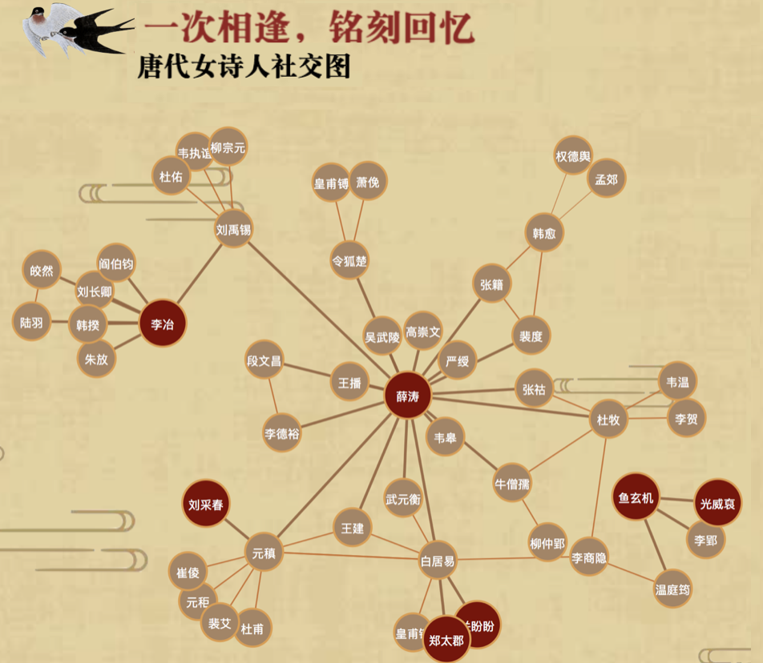

ABOUT ME
Hi there, I'm Xiaohan. (pronounced as 'Shiao Han') :) I'm currently an underguaduate student at Zhejiang University, China. I have rich experience in design and I'm strongly motivated to explore computer system.
I'm a self-motivated dream chaser. People once told me "female can't do engineering", but now I'm working hard to prove that I can, and I am able to do science, especially computer science, very well as a female. You can see my projects here.
I'm a passionate MOOCer. I have completed and earned certificates of 12 online courses from top universities around the world. My way of learning would not stop.
My CV (PDF version) is available [HERE].
COMPUTER SCIENCE


MATHEMATICS
University of California San Diego & National Research University Higher School of Economics

University of California San Diego & National Research University Higher School of Economics
INTERACTION DESIGN
Ready Player One
Queensland University of Technology
Advisor: Dr. Jared Donovan
The concept is based on movie ‘Ready Player One’. Same as the movie, the player is going to collect three keys (the copper key, the jade key, and the crystal key) to win Halliday’s easter egg. In my design, the player has to win three games to collect all the keys: a car racing game, a dancing game, and a key chasing game. The game combines sound, movement, vision input and output.
In the design stage, I utilized UML to visualiza the deign and structure. Then, I massively adopted different OOP design principles to achive different functions. The project is originaly based in Java, however, I rebased it to Processing for the course assignment requirement.
You can watch the game video here or read the Pitch Document.
Queensland University of Technology
Advisor: Dr. Jared Donovan
The concept is based on movie ‘Ready Player One’. Same as the movie, the player is going to collect three keys (the copper key, the jade key, and the crystal key) to win Halliday’s easter egg. In my design, the player has to win three games to collect all the keys: a car racing game, a dancing game, and a key chasing game. The game combines sound, movement, vision input and output.
In the design stage, I utilized UML to visualiza the deign and structure. Then, I massively adopted different OOP design principles to achive different functions. The project is originaly based in Java, however, I rebased it to Processing for the course assignment requirement.
You can watch the game video here or read the Pitch Document.

Tang Poets: Visuliazation of Chinese Female Poets
State Key Lab of Computer-Aided Design & Computer Graphics, Zhejiang University
Published by Xinhua Net Data News (in Chinese)
Advisor: Prof. Wei Chen
In Chinese Tang Dynasty, as many female did not have the right to get educated and speak publicly, hundreds of female tried to pursue a higher social status by writing poems and engaging in social activities among male poets.
In this project, we analyzed the data from China Biographical Database Project (CBDB) and visualized them in a proper way. We visualized the number of male and female poets in different times, the social relationships among poets in Tang Dynasty and the word frequency of poems written by male and female poets.
State Key Lab of Computer-Aided Design & Computer Graphics, Zhejiang University
Published by Xinhua Net Data News (in Chinese)
Advisor: Prof. Wei Chen
In Chinese Tang Dynasty, as many female did not have the right to get educated and speak publicly, hundreds of female tried to pursue a higher social status by writing poems and engaging in social activities among male poets.
In this project, we analyzed the data from China Biographical Database Project (CBDB) and visualized them in a proper way. We visualized the number of male and female poets in different times, the social relationships among poets in Tang Dynasty and the word frequency of poems written by male and female poets.
Earthquake Map
University of California San Diego
Coursera Online Project
This project read the data of worldwide real-time earthquakes and visualized their attributes (depth, magnitude, location, etc.) on a map. Many OOP deign principles are used such as inheritance.
The project is displayed on a GUI application where I also implemented responds to user's input: hover and click. Searching and sorting algorithms is also discussed to get a higher performance of the project.
University of California San Diego
Coursera Online Project
This project read the data of worldwide real-time earthquakes and visualized their attributes (depth, magnitude, location, etc.) on a map. Many OOP deign principles are used such as inheritance.
The project is displayed on a GUI application where I also implemented responds to user's input: hover and click. Searching and sorting algorithms is also discussed to get a higher performance of the project.
Text Editor
University of California San Diego
Coursera Online Project
The project implemented a GUI application which is a text editor with many functions. On detecting user's input, it can provide real-time auto correction. Plus, it is able to show the Flesch Readability score of the text and generat Markov Chain Text based on what the user has already typed.
The project worked with Strings and Regular Expressions in Java to generate the Flesch Readability Score and utilized Linked List and Tries for Markov Chain auto-complete text, used Hash Map for calculating edit distance.
University of California San Diego
Coursera Online Project
The project implemented a GUI application which is a text editor with many functions. On detecting user's input, it can provide real-time auto correction. Plus, it is able to show the Flesch Readability score of the text and generat Markov Chain Text based on what the user has already typed.
The project worked with Strings and Regular Expressions in Java to generate the Flesch Readability Score and utilized Linked List and Tries for Markov Chain auto-complete text, used Hash Map for calculating edit distance.
Map Graphs
University of California San Diego
Coursera Online Project
This is another GUI application I have developed. It generated the shortest path between the source point and the sink point. It can also genertate the fastest path based on the real-time traffic conditions.I created a class for map search engine and implemented weighed graph in Java to find the shortest path. Depth-first search and breadth-first search algorithms are also utilized to generate the best route on the map.
University of California San Diego
Coursera Online Project
This is another GUI application I have developed. It generated the shortest path between the source point and the sink point. It can also genertate the fastest path based on the real-time traffic conditions.I created a class for map search engine and implemented weighed graph in Java to find the shortest path. Depth-first search and breadth-first search algorithms are also utilized to generate the best route on the map.
GUITAR & MUSIC
I've learned acoustic guitar for four years. It is not a long time, but I truly indulge myself into it. I will pick up a guitar and play it whenever and wherever I see one, and I really enjoy playing guitar by the street, seeing people passing by or standing by, listening to my music.

I've learned acoustic guitar for four years. It is not a long time, but I truly indulge myself into it. I will pick up a guitar and play it whenever and wherever I see one, and I really enjoy playing guitar by the street, seeing people passing by or standing by, listening to my music.
ART & DESIGN
I had a thing for painting since I was very young. I have always seen painting as my biggest hobby, and I usually draw pictures of my thoughts and my life. I can draw both western and Chinese traditional paintings.


I had a thing for painting since I was very young. I have always seen painting as my biggest hobby, and I usually draw pictures of my thoughts and my life. I can draw both western and Chinese traditional paintings.